Q3. Labor trafficking and visas: H-1B, H-2A/H-2B, J-1, A-3/G-5 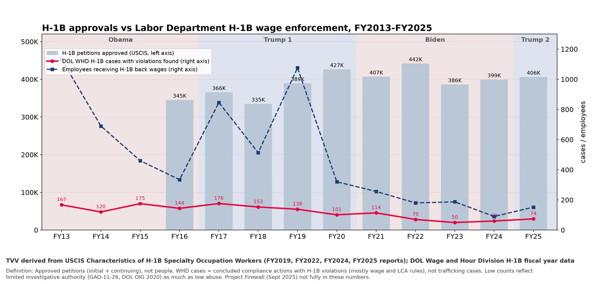
TVV derived: H-1B approvals vs DOL H-1B wage enforcement, FY2013-FY2025. TVV derived from USCIS H-1B characteristics reports; DOL WHD H-1B data | Date: Built 2026-10-17. Approved petitions (bars) vs WHD cases with violations and workers paid back wages (lines)Source: https://www.uscis.gov/sites/default/files/document/data/fy25%5Fh1b%5Fcharacteristics%5Fcongress%5Fsigned%5F04242026.pdf https://www.uscis.gov/sites/default/files/document/reports/ola_signed_h1b_characteristics_congressional_report_FY24.pdf 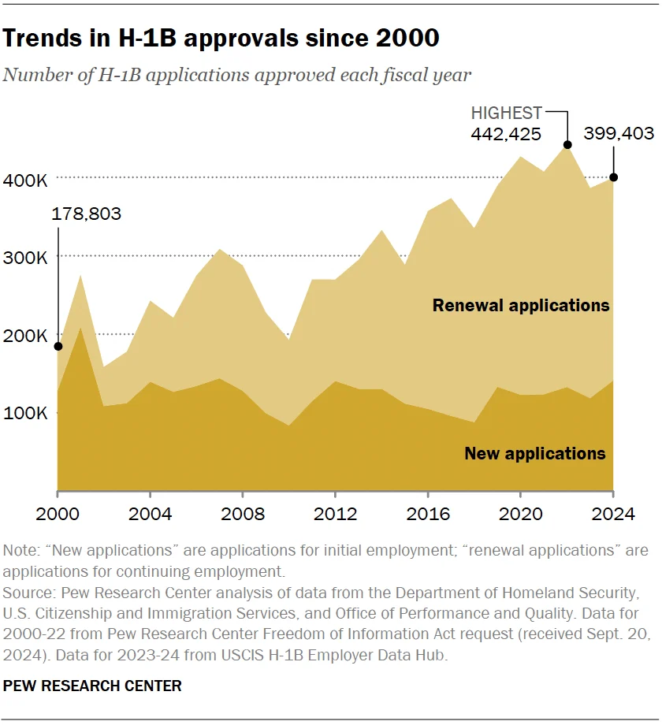
Trends in H-1B approvals since 2000 (new vs renewal applications). Pew Research Center | Date: 2025-03-04. H-1B petitions approved per fiscal year, initial vs continuing (peak about 442K in FY2022). Approved petitions, not people or visas issued; renewals and job changes counted againSource: https://www.pewresearch.org/short-reads/2025/03/04/what-we-know-about-the-us-h-1b-visa-program/ https://www.pewresearch.org/wp-content/uploads/sites/20/2025/03/SR_25.03.04_h-1b_1.png 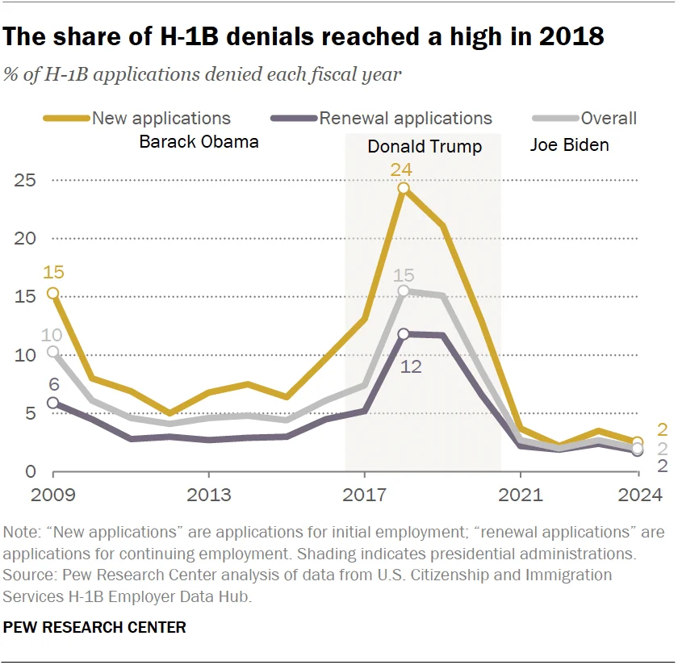
The share of H-1B denials reached a high in 2018. Pew Research Center | Date: 2025-03-04. Denial rates for new and renewal H-1B applications under Obama, Trump 1, Biden. USCIS adjudication outcomesSource: https://www.pewresearch.org/short-reads/2025/03/04/what-we-know-about-the-us-h-1b-visa-program/ https://www.pewresearch.org/wp-content/uploads/sites/20/2025/03/SR_25.03.04_h-1b_2.png 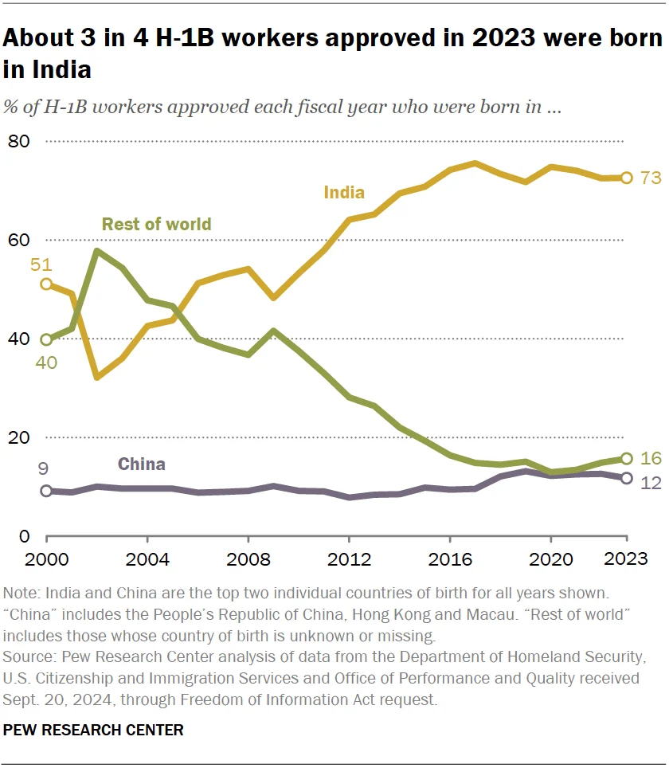
About 3 in 4 H-1B workers approved in 2023 were born in India. Pew Research Center | Date: 2025-03-04. Share of approved H-1B beneficiaries by country of birth (India, China, rest). Approved petitions by beneficiary birth countrySource: https://www.pewresearch.org/short-reads/2025/03/04/what-we-know-about-the-us-h-1b-visa-program/ https://www.pewresearch.org/wp-content/uploads/sites/20/2025/03/SR_25.03.04_h-1b_3.png 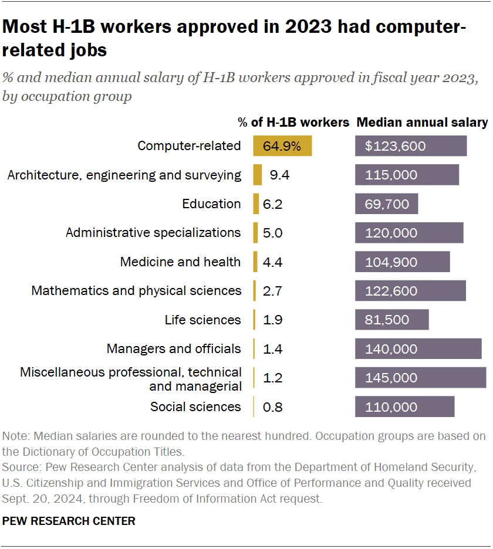
Most H-1B workers approved in 2023 had computer-related jobs (share and median salary by occupation). Pew Research Center | Date: 2025-03-04. Share of approvals and median annual salary by occupation group. Salary stated on the petition, not audited paySource: https://www.pewresearch.org/short-reads/2025/03/04/what-we-know-about-the-us-h-1b-visa-program/ https://www.pewresearch.org/wp-content/uploads/sites/20/2025/03/SR_25.03.04_h-1b_5.png 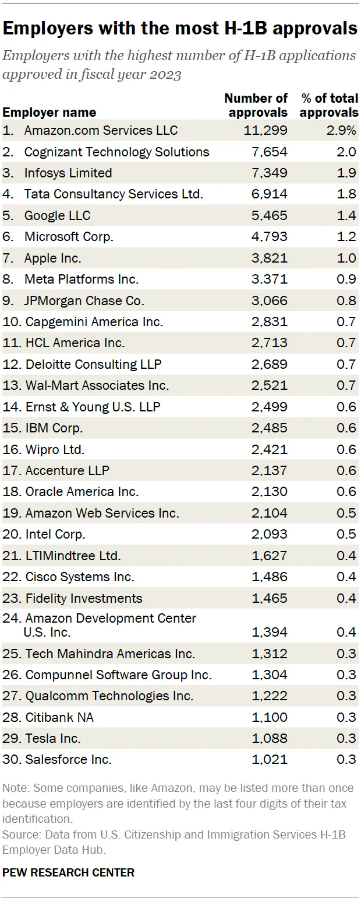
Employers with the most H-1B approvals, FY2023. Pew Research Center | Date: 2025-03-04. Top 30 employers by number of approvals (Amazon, Cognizant, Infosys, TCS, Google...). USCIS H-1B Employer Data Hub; outsourcing firms that critics focus on sit next to big techSource: https://www.pewresearch.org/short-reads/2025/03/04/what-we-know-about-the-us-h-1b-visa-program/ https://www.pewresearch.org/wp-content/uploads/sites/20/2025/03/SR_25.03.04_h-1b_6.png 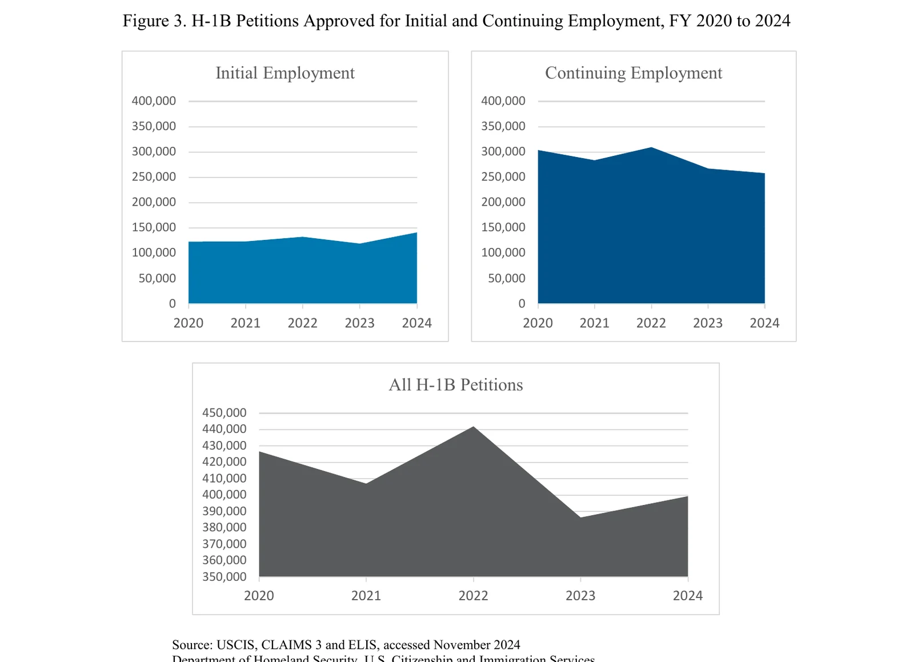
H-1B petitions approved for initial and continuing employment, FY2020-2024. USCIS, Characteristics of H-1B Specialty Occupation Workers FY2024, Figure 3 | Date: April 29, 2025. Approved petitions: FY2024 399,395 (141,205 initial, 258,190 continuing). Approved petitions, not peopleSource: https://www.uscis.gov/sites/default/files/document/reports/ola_signed_h1b_characteristics_congressional_report_FY24.pdf 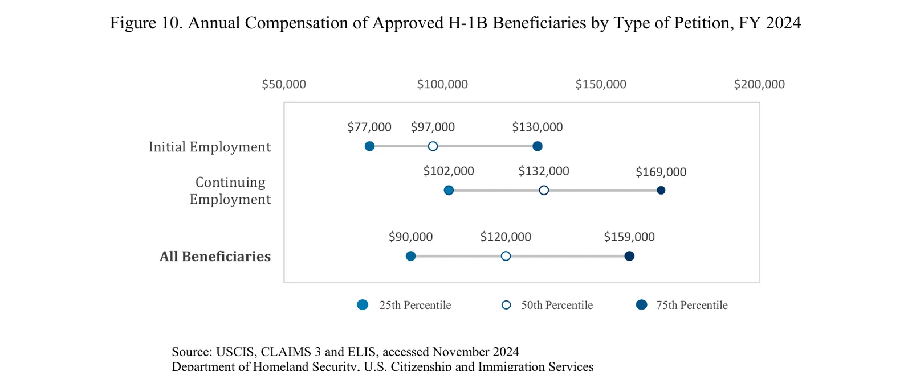
Annual compensation of approved H-1B beneficiaries by type of petition, FY2024 (25th, 50th, 75th percentiles). USCIS, H-1B Characteristics FY2024, Figure 10 | Date: April 29, 2025. Pay offered at approval, by percentile. Petition compensation, not wage audits; says nothing directly about underpayment or coercionSource: https://www.uscis.gov/sites/default/files/document/reports/ola_signed_h1b_characteristics_congressional_report_FY24.pdf 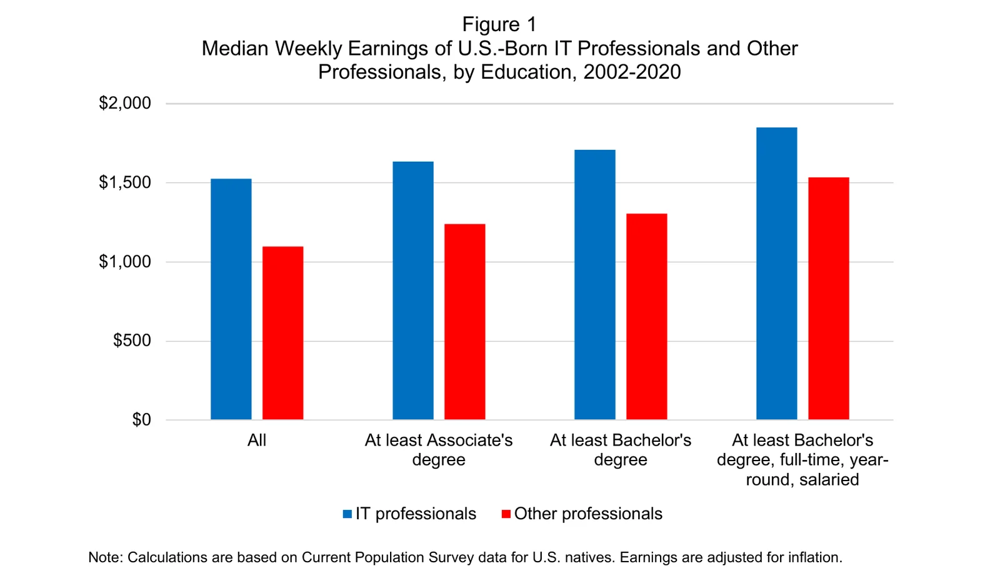
Median weekly earnings of U.S.-born IT professionals vs other professionals, by education, 2002-2020. National Foundation for American Policy (NFAP), analysis of the Sept 2025 H-1B proclamation, Figure 1 | Date: Sept 2025. CPS earnings: IT professionals earn more than other professionals at each education level. Used to argue H-1B has not depressed native IT wages (defender view)Source: https://nfap.com/wp-content/uploads/2025/09/Analysis-of-Claims-in-Presidential-Proclamation-on-H-1B-Visas.NFAP-Policy-Brief.September-2025.pdf 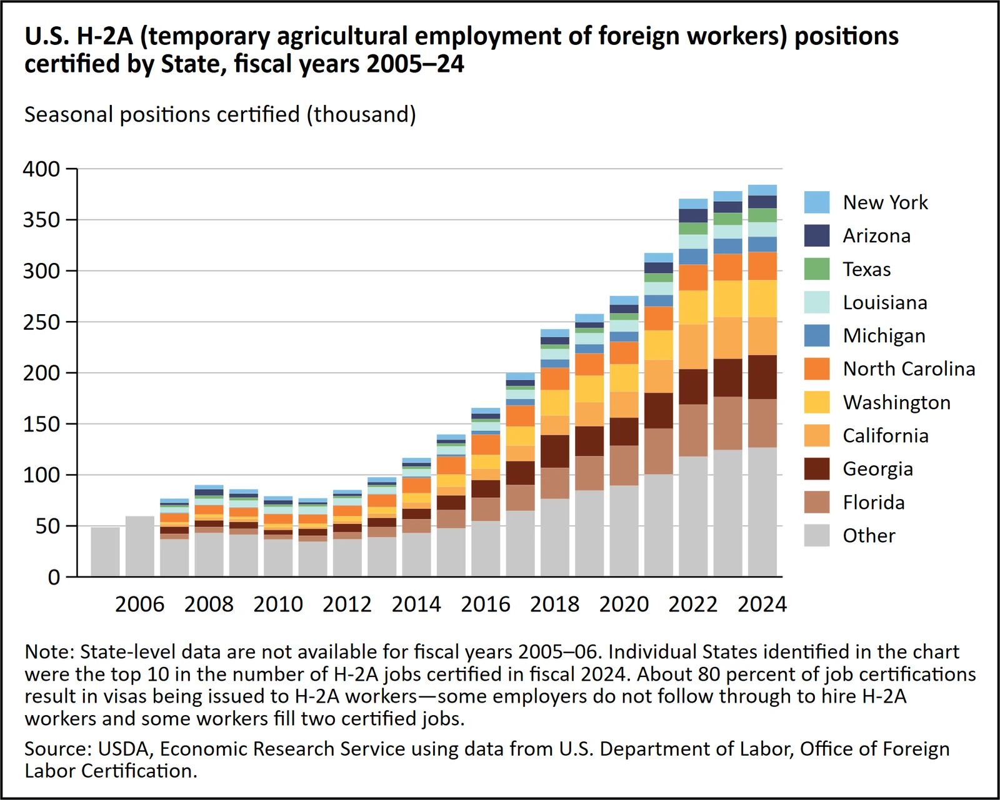
U.S. H-2A temporary agricultural positions certified by State, FY2005-24. USDA Economic Research Service (ERS) chart gallery | Date: 2025 (data FY2005-24). H-2A positions certified by DOL by state, stacked. Certified positions, not workers admitted; one worker can fill severalSource: https://www.ers.usda.gov/data-products/chart-gallery/chart-detail?chartId=86844 https://www.ers.usda.gov/media/25803/86844-chart-image-file.png 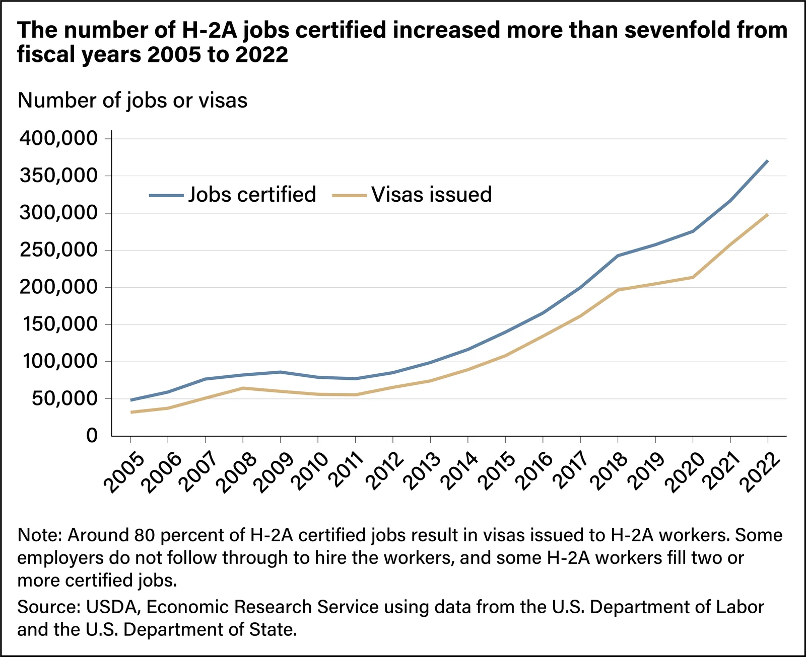
The number of H-2A jobs certified increased more than sevenfold from 2005 to 2022. USDA Economic Research Service (ERS) chart gallery | Date: 2023 (data FY2005-22). H-2A jobs certified vs visas issued. Certifications by DOL vs State Dept visasSource: https://www.ers.usda.gov/data-products/chart-gallery/chart-detail?chartId=106007 https://www.ers.usda.gov/media/28036/106007-chart-image-file.png 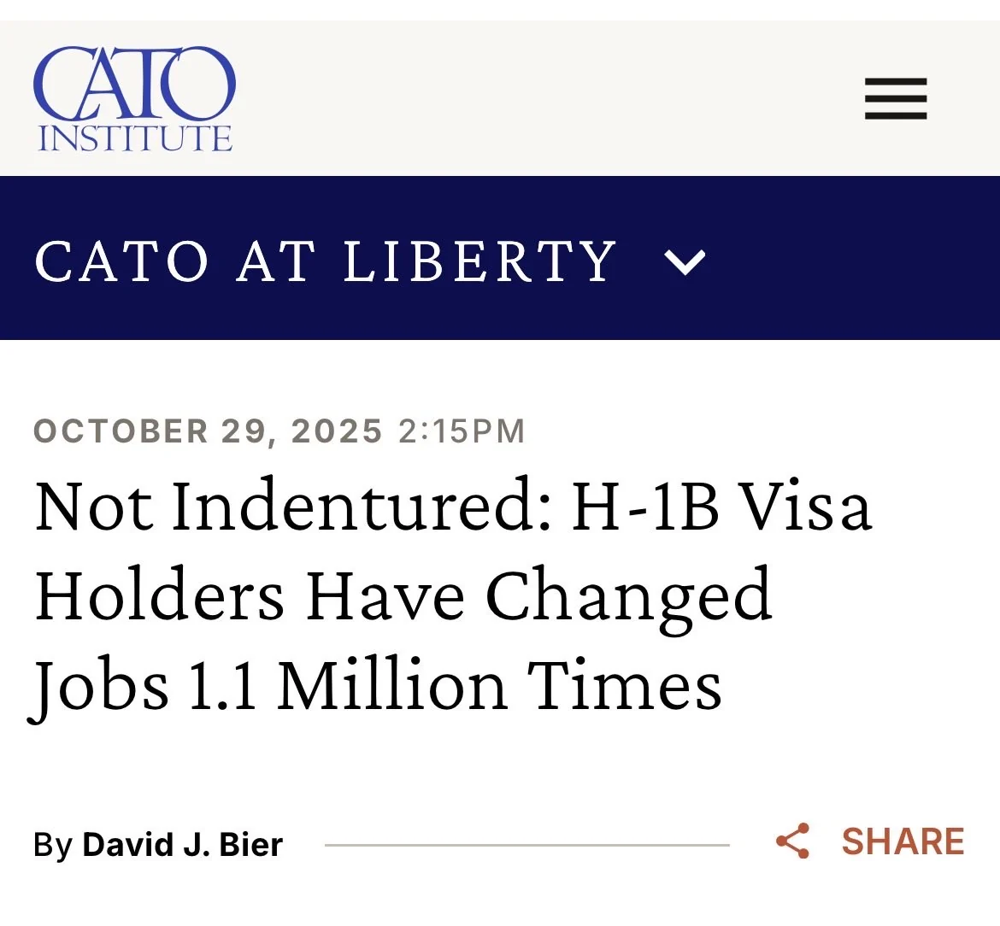
X post: "H-1B workers aren’t indentured servants" (Cato headline card). @David_J_Bier (Cato Institute) on X | Date: Oct 2026. Not a chart: headline image for Cato argument that 1.1 million H-1B job changes (FY2005-24) refute the indentured-servitude claim. Change-of-employer petitions approved, counted from USCIS dataSource: https://x.com/David_J_Bier/status/2108301212521320742 https://pbs.twimg.com/media/HUIwxg6XMAAx3YQ.jpg